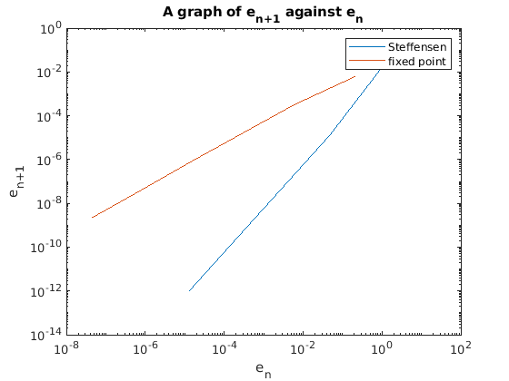

clear all;
close all;
tol = 1e-8;
x0 = 0.2;
kmax = 100;
g=@(x) (3+3*x-x^2)^(1/3);
fprintf('Below is the solution for the root finding problem;\n');
fprintf(' k x_k e_n\n');
[xroot, en] = steffensens(g,x0,tol,kmax)
en0 = [];
for k = 1:length(en)-1
en3 = en(k);
en0 = [en0,en3];
end
en1 = [];
for k = 2:length(en)
en2 = en(k);
en1 = [en1,en2];
end
figure(1);
loglog(en0,en1);
title("A graph of e_n_+_1 against e_n");
ylabel("e_n_+_1");
xlabel("e_n");
slope_steffensens=polyfit(log(en0),log(en1),1);
slope_steffensens = slope_steffensens(1);
fprintf('slope_steffensens = %f\n',slope_steffensens(1));
fprintf('Hence the steffensens is quadratically convergent since its slope is approximately 2.\n');
[en] = fixed_point(g,x0,tol,kmax);
enf0 = [];
for k = 1:length(en)-1
en3 = en(k);
enf0 = [enf0,en3];
end
enf1 = [];
for k = 2:length(en)
en2 = en(k);
enf1 = [enf1,en2];
end
hold on
loglog(enf0,enf1);
legend('Steffensen','fixed point')
slope_fixed_point=polyfit(log(enf0),log(enf1),1);
slope_fixed_point = slope_fixed_point(1);
fprintf('slope_fixed_point = %f\n',slope_fixed_point(1));
fprintf('Hence the fixed point is linearly convergent since its slope is approximately 1.\n');
function [en]=fixed_point(g,x0,tol,kmax)
xk = x0;
for k = 1:kmax
xkp1 = g(xk);
if abs(xkp1 - xk) < tol
fprintf('Tolerance achieved\n');
xroot = xkp1;
break;
end
xk = xkp1;
en(k) = abs(xkp1 - sqrt(3));
end
end
Below is the solution for the root finding problem;
k x_k e_n
1 1.7778344886912885e+00, 1.5778e+00
2 1.7320380917493903e+00, 4.5796e-02
3 1.7320508075679841e+00, 1.2716e-05
4 1.7320508075688774e+00, 8.9329e-13
Tolerance achieved
xroot =
1.7321
en =
1.5778 0.0458 0.0000 0.0000
slope_steffensens = 2.086567
Hence the steffensens is quadratically convergent since its slope is approximately 2.
Tolerance achieved
slope_fixed_point = 0.971838
Hence the fixed point is linearly convergent since its slope is approximately 1.
